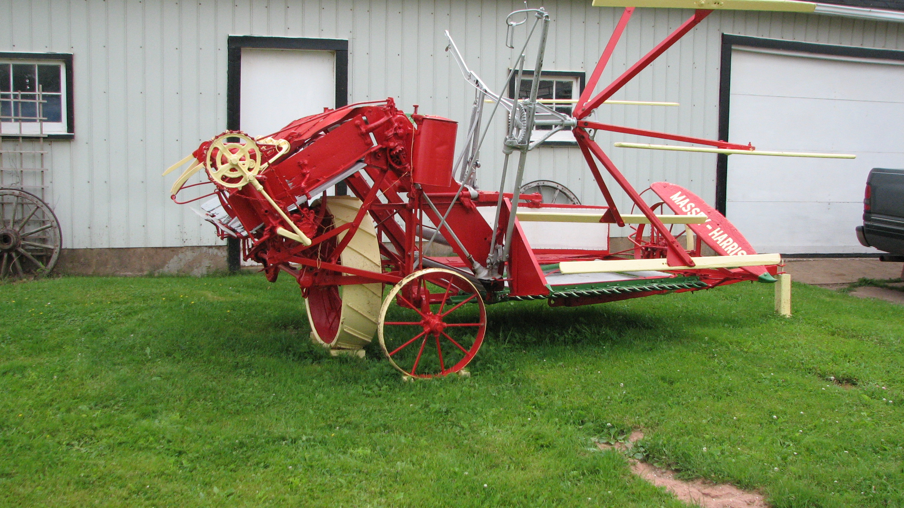
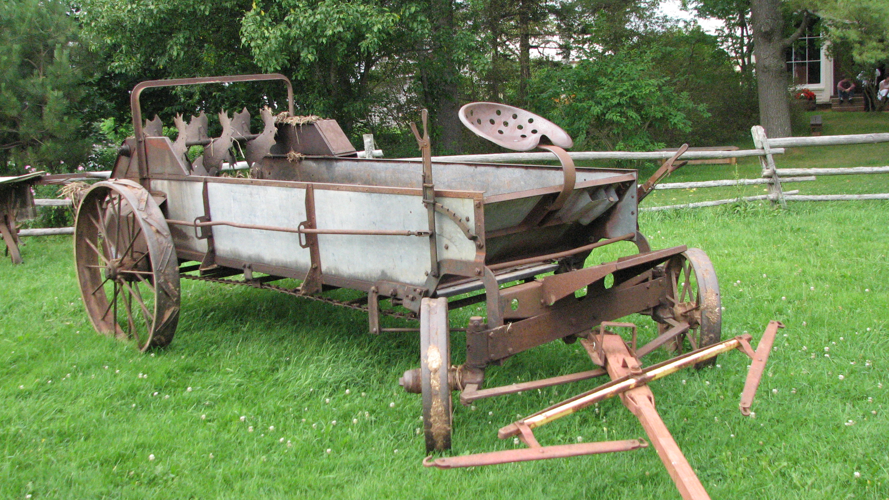
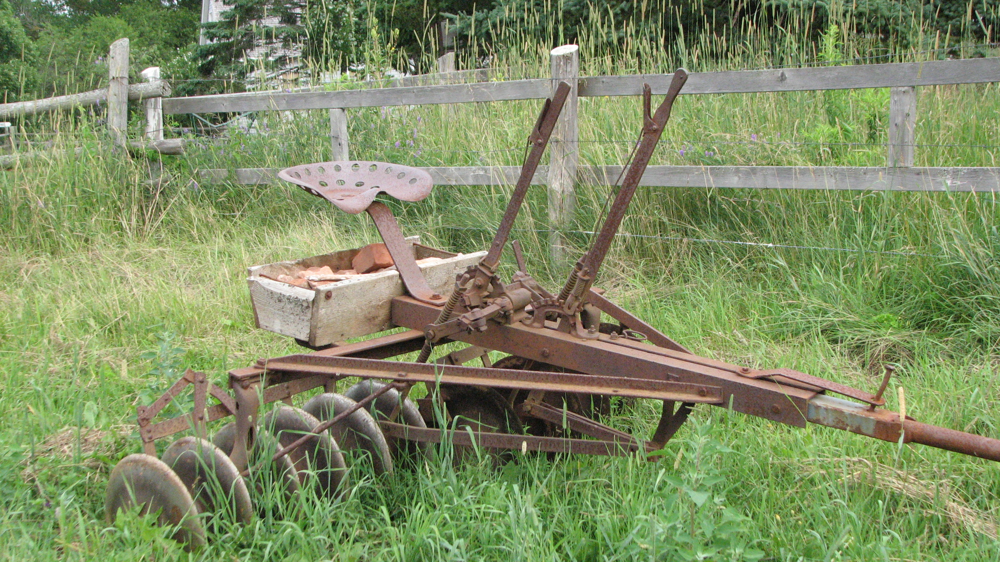
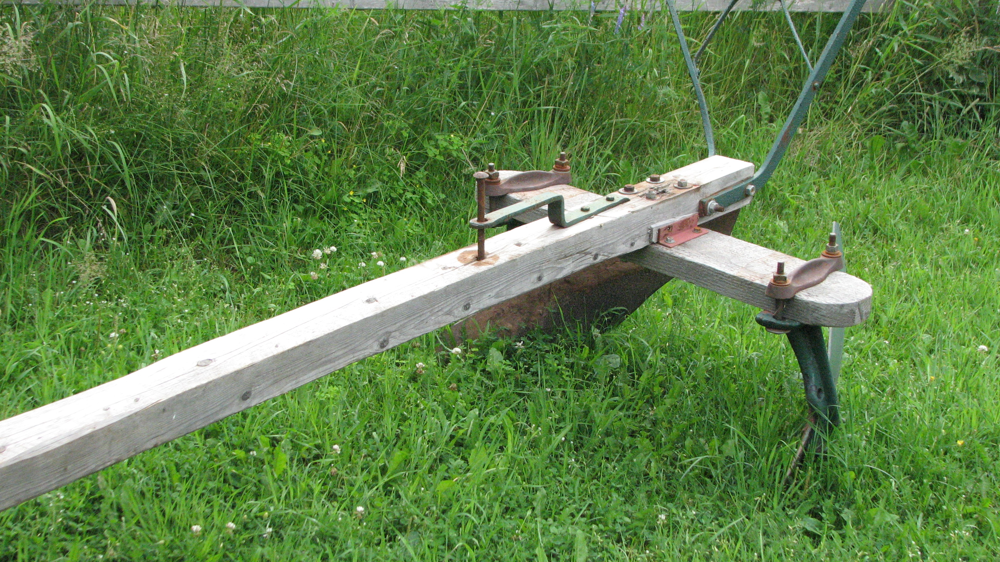

The Family Chronicle
No. 145 October 21, 2007
____________________________________________________________________
Some Farm Machinery




The top photo is of a Massey Harris grain binder owned by Bernard Keefe, Cherry Valley, PEI. The age is not known but I believe it to be manufactured in the 1930s or even earlier. The binder includes a set of canvasses but they are being kept in dry storage.
The second photo is of a manure spreader that is part of the collection at the agricultural museum at Orwell corner, PEI. I could not find any discernable markings so do not know the make or the year. It is certainly an older model than we had on our farm in the 1940s. Readers will note that the front wheels turn like car wheels rather than the older versions where the front wheels pivoted.
The third photo is of a set of disc harrows used for cutting/breaking up sod after plowing. Readers will note a wooden box mounted on top of the harrows to hold stone as extra weight for heavy sod.
The last photo is of a horse hoe used for making drills in the vegetable garden. Notice the angle of the handles; this allowed the farmer to walk to the side of a drill. The angle could be changed. A horse hoe was also used to “mold” or hill the rows of potatoes after the tops had appeared above the ground.
Text books
An article in our local Seniors Paper reminded me of yesteryear. School books/texts were scarce and were passed down in the family. As I recall, some of my texts were used by sister, Elinor, and brothers Kenneth and Norman. Because they were passed down to younger family members, one seldom made notes in the margins or underlined the text. I am still reluctant to mark a book I am reading.
As well, textbooks were frequently covered to help keep them clean. Covers could be brown paper, unused wall paper or even oil cloth. At the beginning of the next year, the new “owner” simply replaced the cover and the book was almost as good as new.
Follow-up
Regis Carroll writes:
“I would like comment on # 1 & # 2 at the school that I went to in Bay du Vin we were passed the paper if it required .The paper would go bad in the outhouse”
Photocopying
The advent of technology has not reduced the amount of paper, On the contrary, more paper than ever is used and many of us have copying capability in our own homes.
Of course, remember when each document was an original – every letter, report for the church or the WI.
Then we had carbon paper so one writing would provide a number of copies. I am not sure that one could make more than three or four carbon copies at once - a far cry from when every I was talking with a friend recently about all the paper used for photocopying. And of course, carbon paper, and carbon copies were so messy. One soon had carbon over one fingers and sometimes on ones hands.
I started teaching in Kouchibouguac in 1947 and purchased from Moyer School supplies in Moncton a gelatin-based copier. My recollection is a bit hazy but I believe the basis was a small tin box, a bit like a cookie sheet but only about nine by fifteen inches.
One used a gelatin like liquid (I think that we warmed it and used it over and over) and poured it into the pan. Using a special pencil, purplish in colour, one wrote the original. One placed the original with the printed side down; it left a copy of the document in reverse on the gelatin. Then one laid fresh white paper on the gelatin and the copy was transferred to it.
In 1948 I taught at MRHS and we had a Gestetner copier. One cut a stencil, literally, and inserted it into the Gestetner. As one turned the handle, the machine picked up a clean piece of paper and the ink flowed through the stencil to make the copy. Ours was operated using a crank; later ones were powered by electricity.
Photo Wanted
As a result of an earlier Newsletter, I had a letter from a woman in Minnesota recalling her childhood and going with her father on a set of bobsleds. She wondered if I had any photos; I don’t. Do you? If you do, I would love to have a copy – send me the original and I will return it, send me a copy or send it electronically. I will include it in a future newsletter.
The Family Chronicle (Copyright) is an occasional newsletter published by Don Glendenning and posted on the family website. It is intended to share information about my family, community and the times in which I grew up. While every effort is made to be accurate, errors are likely to occur. Comments, enquiries and information may be sent to 62 Queen Elizabeth Drive, Charlottetown, PEI, C1A 3A9. Tel: 902 892 5859. Email: don@glendenning.net Web: www.glendenning.net/don